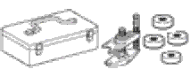
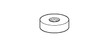

Exhaust pipe ASSY (1NZ-FE (4WD)) Preparation [Remove]
 | 09224-00010 | O2 sensor wrench |
|  | 09960-20010 | Ball joint plastic set |
| (09961-02010) | Assie Ball joint plastic | |
|  | (09961-02060) | Spacer B |
| HMJ-450TWS | High Mission Jack Telegrated load 450kg Treated as Banzai Co., Ltd. | |
| HMJ-RP | High Mission Jack attachment Treated as Banzai Co., Ltd. | |
| ML-800 | High Mission Jack Telegrated load 450kg Treatment of Iyasaka Co., Ltd. | |
| ML-RP | High Mission Jack attachment Treatment of Iyasaka Co., Ltd. |